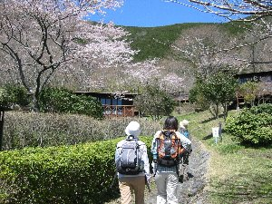
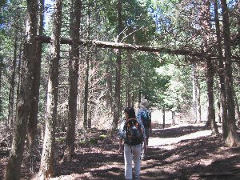
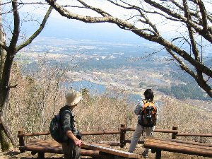

長者ヶ岳ハイク | ２００４年４月 |
|---|---|
| 春になって、暖かくなって来ると自然が恋しくなります。ヘビや蛙と同じように我々も外に出よう！ と言うことで、２年前に雨のため中止となった、田貫湖畔〜長者ヶ岳ハイキングにリベンジ！ 今回、賛同頂いたのは私（べっしー）の他、のび太、ぞう、ハチ、の４人で有る。 静岡を朝８時に出発し、田貫湖畔に１０時着。湖畔の桜は満開一歩手前という感じであった。 天気予報で「五月並の暖かさ」と言うだけ有って、今日は雲一つ無い快晴で、暖かい。雪を頂いた富士山が綺麗でした。 ２年前、雨の中を登ったのびちゃんを先頭に、いざ出発！桜が綺麗です。そこでぞうさんが大きな一眼レフカメラを取り出しパチリ！やや、そんなカメラ持っていたんですね。私は今日はデジカメです。カメラマンの席、奪われちゃいました。 しばらく行くと、杉や桧の林を進みます。春のウグイスのさえずりが聞こえて、い〜気分です。 | |
|  桜を眺めながら出発です |  林の中を歩きます |
| ３０分ほど登ってから振り返ると、富士山が見えます。手前の朝霧高原牧場とマッチして綺麗です。 ここからず〜と、尾根を登っていくのですが、のびちゃんが「あーもう、こんなに整備しちゃって！」と、階段状に整備された登山道や、途中の木製ベンチに文句を言っていました。彼としては観光地化しない山がお好みのようです。まあ、それは分かりますが。 山道はここ数日の良い天気にもかかわらず、少しぬかるんでいました。しかも傾斜がキツイ所もあります。これで階段状になっていなかったら、ドロドロの滑り台でしょう。 さらに３０分ほど登ると、ちょうど田貫湖と富士山が望める場所に出ます。しかし、真正面では無いので、写真的に難しい・・・ この頃から気温が上昇したのか、単に歩いて発熱したのか、とにかく熱い。ザックに付いている簡易温度計は２５℃を指している。取りあえずシャツを一枚脱ぎます。 やはり観光地化してきたのか、沢山の登山客とすれ違い、追い越し追い越されながら、１２時頃長者ヶ岳山頂（標高1336m）です。富士山が真正面で素晴らしい景色ですが、田貫湖は見ることが出来ませんでした。 | |
 長者ヶ岳山頂 携帯カメラでパチリ！ |  途中の休憩ポイントから田貫湖が望めます |
| 上空をパラグライダーが通り過ぎる中、昼食を済ませ下山します。 帰りは田貫湖の南側に降りてみようと、途中から来た道と違う方に降りていきます。ちょうど国民休暇村方面です。 この下山道が、最近作ったらしく、下に木のチップの様なものが引き詰められています。なんかフワフワする感触で、不思議です。 田貫湖畔南側は、花が一杯です。マメザクラ（だと思う）が綺麗に咲いています。 気持ちの良い季節ですから、人が沢山居ます。寝転がったり、犬と戯れたり、自転車に乗ったりと様々ですが、皆休日を楽しんでいるようです。 | |
 田貫湖の向こうに富士山 |  富士山をバックに休憩 |
| 我々もしばし、芝生の上に寝転がって、至福の時を味わいます。にしても、今日は暑い。 ４時頃、田貫湖を後にし、家路につきます。 今回車を出して頂いたぞうさんありがとう！そして、全て運転してくれた、のびちゃんに感謝！帰り道、せめて起きていなければ、と思いながらも、睡魔に襲われ頭をガックンガックンしてしまいました。スミマセン〜 ハチさんもアンドーナツサンキューです〜 やはり、自然の中って良いですよね。また、行きましょう！！ | |
 桜を撮るぞうさん |  最後に記念写真 |
| コメント＆写真 ｂｙ べっしー | |